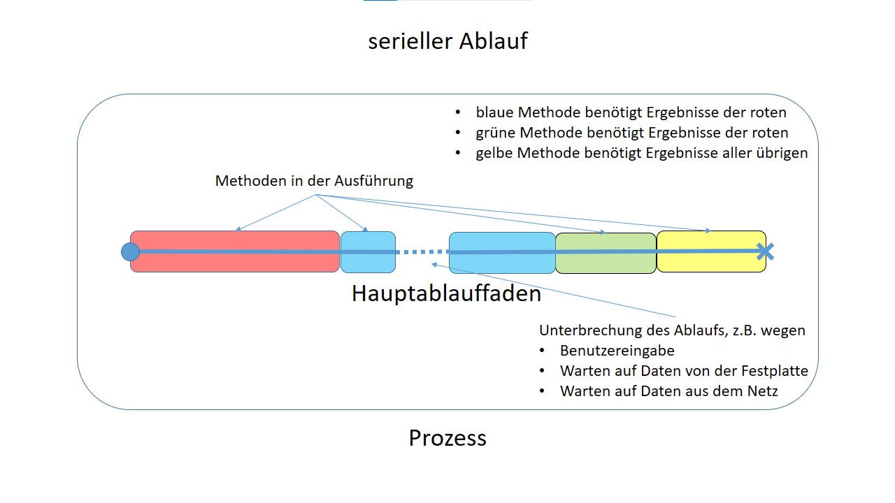
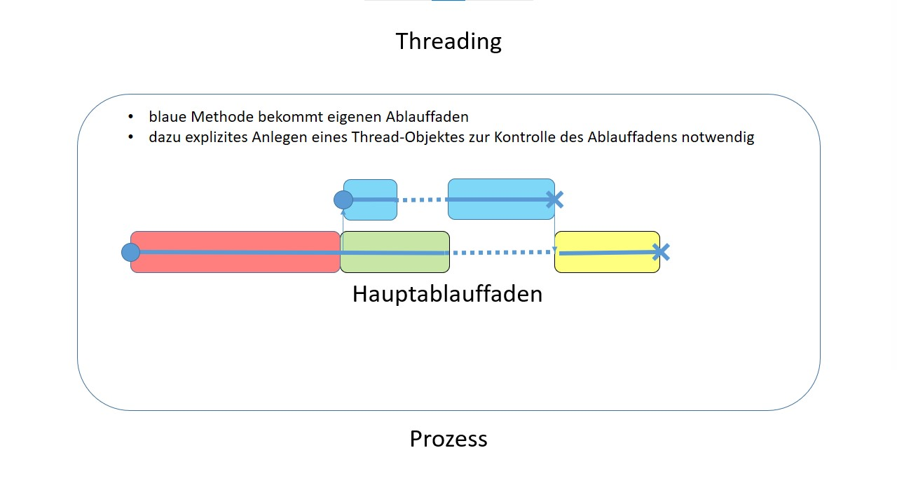
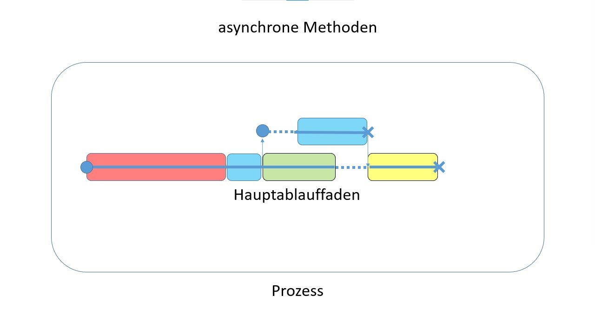

Asynchrone Methoden sind eine elegante Möglichkeit der nebenläufigen und parallelen Programmierung. In diesem Kapitel werden die folgenden Fragen geklärt:
Professor Hausmann ist ein moderner Ehemann, also arbeitet er im Haushalt mit. Eine seiner Hauptaufgaben ist das Wäschewaschen mit den folgenden Schritten:
Professor Hausmann ist Beamter, der sich mit Hingabe seinen Aufgaben widmet. So kann er seine Büroarbeit für die Hochschule erst nach vollständigem Abschluss des Wäschewaschens angehen.
Abends erzählt er stolz seiner praktisch veranlagten Ehefrau von seinen Taten im Haushalt. Doch die schüttelt bloß den Kopf über Männer im Allgemeinen und Professoren im Besonderen: Zumindest während des Waschens in der Waschmaschine hätte ihr Ehemann schon mal mit seiner Büroarbeit anfangen können.
Professor Hausmann ist frustriert und will nun versuchen, das Konzept des parallelen Arbeitens auch auf seine Hausarbeit anzuwenden.


In C# stellt der Namensraum System.Threading Werkzeuge für das Erzeugen und Starten von Threads zur Verfügung:
Main und alle von ihr gerufenen Methoden liegen im Hauptthread.Allerdings folgt so der Quellcode einer technischen Vorgabe und nicht seiner inneren Logik. Es gibt alternative und neuere Konzepte für Parallelität in C#.
(Falls Sie sich dennoch dafür interessieren: → VS5 „Threading“).
Die rufende Methode ist also so lange blockiert, bis die gerufene Methode ihre Arbeit beendet hat. Das kann notwendig sein, wenn die rufende Methode das Ergebnis der gerufenen Methode zum Weiterarbeiten benötigt.
Hat die rufende Methode aber noch andere Tätigkeiten zu tun, die (erst einmal) nicht auf die Ergebnisse der gerufenen Methode angewiesen sind, so liegt potentiell Nebenläufigkeit vor.
Diese Vorgehensweise hat mehrere Vorteile:

Asynchrone Methodenaufrufe werden in C# unterstützt. Dazu muss der Namensraum System.Threading.Tasks eingebunden werden. Darin befindet sich eine Klasse Task. Ein Objekt dieser Klasse stellt eine Aufgabe dar, die nebenläufig zu anderen Aufgaben ausgeführt werden kann (man beachte den Fokus auf inhaltlich „Aufgabe“, nicht technisch „Thread“). Die Klasse Task gibt es in zwei Varianten:
TResult, falls die Aufgabe ein Objekt vom Typ TResult als Ergebnis liefert, undDie generische Klasse ist Unterklasse der nicht-generischen Klasse Task. Weiter enthalten die Klassen einige nützliche Methoden, z.B.
public static Task Delay(int millisecondsDelay)public static Task Run (Action action)action
und startet sie in einem eigenen Ablauffaden.public static Task<TResult> Run<TResult> (Func<TResult> function)function (die
im Gegensatz zu action oben einen Rückgabewert vom Typ TResult hat)
und startet sie in einem eigenen Ablauffaden.[1]public void Wait()Die Methode Tätigkeit simuliert somit eine Tätigkeit bezeichnung,
die den Zeitverbrauch dauer in Millisekunden hat:
private static void Tätigkeit(string bezeichnung, int dauer)
{
Console.WriteLine($"Beginn: {bezeichnung}");
Task.Delay(dauer).Wait();
Console.WriteLine($"Ende: {bezeichnung}");
}
Um Professor Hausmann helfen zu können bauen wir sein Problem nach. Er hat zwei Aufgaben, nämlich Wäschewachen und Büroarbeit. Diese Aufgaben können als Methoden dargestellt werden (→ V11-Hausmann-1):
private static void WäscheWaschen()
{
Console.WriteLine($"Aufgabe: Wäsche waschen");
Tätigkeit("Wäsche zusammensuchen", 2000);
Tätigkeit("Waschmaschine befüllen", 1000);
Tätigkeit("Waschen (Waschmaschine)", 10000);
Tätigkeit("Wäsche entnehmen", 1000);
Tätigkeit("Wäsche aufhängen", 3000);
Console.WriteLine($"Wäsche waschen beendet");
}
private static void Büroarbeit()
{
Console.WriteLine($"Aufgabe: Büroarbeit");
Tätigkeit("Büroarbeit", 7000);
Console.WriteLine($"Büroarbeit beendet");
}
Diese Methoden können in dieser Form tatsächlich nur nacheinander ausgeführt werden:
WäscheWaschen();
Büroarbeit();
Wir haben es hier also mit einem gewöhnlichen seriellen Ablauf zu tun. So bleibt Professor Hausmann tatsächlich die ganze Zeit neben der laufenden Waschmaschine stehen und tut nichts anderes. Das ist nicht sehr schlau, denn für die Büroarbeit braucht es keine frische Wäsche. Also kann Professor Hausmann die Aufgabe des Waschens der Waschmaschine überlassen und sich selbst der Hochschule widmen.
Die Aufgabe des Wäschewaschens muss als nebenläufig (von der Waschmaschine) durchzuführend gekennzeichnet werden. Dazu
async gekennzeichnet,Task (anstelle von void),Async (das ist zwar nur eine Konvention, sollte aber trotzdem gemacht werden),await gekennzeichnet.WäscheWaschen ist somit zur asynchronen Methode WäscheWaschenAsync geworden (→ V11-Hausmann-2).
private static async Task WäscheWaschenAsync()
{
Console.WriteLine($"Aufgabe: Wäsche waschen");
Tätigkeit("Wäsche zusammensuchen", 2000);
Tätigkeit("Waschmaschine befüllen", 1000);
await Task.Run(() => Tätigkeit("Waschen (Waschmaschine)", 10000));
Tätigkeit("Wäsche entnehmen", 1000);
Tätigkeit("Wäsche aufhängen", 3000);
Console.WriteLine($"Wäsche waschen beendet");
}
In der Zeile
await Task.Run(() => Tätigkeit("Waschen (Waschmaschine)", 10000));
geschehen drei Dinge:
Tätigkeit("Waschen (Waschmaschine)", 10000) erzeugt.
Diese Aufgabe läuft in einem eigenen neuen Ablauffaden. Da Tätigkeiten keine asynchrone
Methode ist, ist dazu ein Aufruf von Task.Run notwendig.await die Methode WäscheWaschenAsync und kehrt
zur rufenden Methode zurück. Hier ist das die Methode Main, die nun die Büroarbeit startet.WäscheWaschenAsync wird in einem weiteren neuen Ablauffaden ausgeführt.
Dieser neue Ablauffaden wird durch await aber erst einmal so lange angehalten, bis die
Tätigkeit des Waschens in der Waschmaschine beendet ist. [2]Das Schlüsselwort await darf nur in Aufgaben (also: asynchronen Methoden) vorkommen und wird nur auf Aufgaben angewendet.
await ist sinnlos.
Professor Hausmann kann also das Wäschewaschen beginnen und zu gegebener Zeit zur Büroarbeit wechseln. Damit er seiner Ehefrau stolz von seiner (diesmal parallelen) Hausarbeit berichten kann, sollte er aber das Ende des Wäschewaschens noch abwarten: [3]
Task wäscheWaschen = WäscheWaschenAsync();
Büroarbeit();
wäscheWaschen.Wait();
Aber halt: Das Ganze klappt hier nur, weil Professor Hausmann mit seiner Büroarbeit schneller fertig ist als die Waschmaschine mit ihrer Wäsche. Bräuchte er länger, so müsste er gleichzeitig Büroarbeit machen und Wäsche aufhängen, oder die Waschmaschine müsste die Wäsche aufhängen. Beides entspricht nicht der Lebenserfahrung.
Prozesse oder nebenläufige Programmteile konkurrieren miteinander um Ressourcen wie Console, Drucker, Datenstrukturen im Hauptspeicher oder Dateien im Massenspeicher, die sie nicht gleichzeitig nutzen können. Damit es kein Durcheinander gibt, müssen sie sich koordinieren.
Es gibt verschiedene Möglichkeiten der Synchronisation; häufig kommt ein Überwacher zum Einsatz, der den Zugriff auf eine Ressource abwehrt, solange sie anderweitig genutzt wird.
Gefährlich wird es, wenn kritische Abschnitte überlappen, also eine Anweisung zu mehr als einem kritischen Abschnitt gehört, was durchaus möglich ist. Um überlappende kritische Abschnitte zu betreten, benötigt eine Aufgabe die Zugangsberechtigung zu allen von ihnen. Haben zwei Aufgaben Zugang zu je einem der sich überlappenden kritischen Abschnitte und warten darauf, dass die jeweils andere Aufgabe ihren Zugang aufgibt, so blockieren sie sich dauerhaft gegenseitig.
lock-AnweisungDie Ressource hier ist Professor Hausmann. Er darf nur von einer Aufgabe gleichzeitig „genutzt“ werden.
Professor Hausmann hat keine Darstellung im bisherigen Programm, also führen wir sie ein als einfaches Objekt der Klasse Object:
private static readonly object _hausmann = new object();
Die Anweisung lock überwacht den Eingang zu einem kritischen Abschnitt: Befindet sich bereits eine Aufgabe in diesem kritischen Abschnitt, so müssen alle anderen, die hinein wollen, warten, bis sie fertig ist; dann darf die am längsten wartende Aufgabe nachrücken. Die Anweisung lock bezieht sich dabei auf eine Variable, die von mehreren Aufgaben genutzt wird.
null ist nicht ausreichend.
Der lock-Anweisung folgt ein Block mit weiteren Anweisungen, die den kritischen Abschnitt bilden. Gibt es mehrere lock-Anweisungen, die sich alle auf dasselbe Objekt beziehen, so bilden alle ihre Blöcke einen gemeinsamen kritischen Abschnitt. Befindet sich also eine Aufgabe in einem dieser Blöcke, so sind alle anderen Blöcke auch gesperrt.
Also müssen alle Anweisungen, die Professor Hausmann nicht gleichzeitig erledigen kann, in einen kritischen Abschnitt hinein. Dieser kritische Abschnitt wird von einer lock-Anweisung geschützt, die sich auf das durch _hausmann referenzierte Objekt bezieht:
private static async Task WäscheWaschenAsync()
{
Console.WriteLine($"Aufgabe: Wäsche waschen");
lock (_hausmann)
{
Tätigkeit("Wäsche zusammensuchen", 2000);
Tätigkeit("Waschmaschine befüllen", 1000);
}
await Task.Run(() => Tätigkeit("Waschen (Waschmaschine)", 10000));
lock (_hausmann)
{
Tätigkeit("Wäsche entnehmen", 1000);
Tätigkeit("Wäsche aufhängen", 3000);
}
Console.WriteLine($"Wäsche waschen beendet");
}
private static void Büroarbeit()
{
Console.WriteLine($"Aufgabe: Büroarbeit");
lock (_hausmann)
{
Tätigkeit("Büroarbeit", 12000);
}
Console.WriteLine($"Büroarbeit beendet");
}
Die Büroarbeit liegt nun in einem kritischen Abschnitt und dauert nun länger, als die Waschmaschine zum Waschen braucht. Wird die Waschmaschine fertig, so wird das Wäschewaschen von der lock-Anweisung vor der Wäscheentnahme angehalten, bis Professor Hausmann seine Büroarbeit erledigt hat (→ V11-Hausmann-3).
Nach erfolgreicher Hausarbeit wollen Professor Hausmann und seine Ehefrau getrennt einkaufen. Sobald beide zurück sind soll es Abendessen geben.
Technisch wird dies nach klassischem Muster der Threads realisiert: Die Aufgabe des Einkaufens ist eine gewöhnliche Methode, die direkt zum Methodenaufruf in einen eigenen Ablauffaden gelegt wird. Die Methode
private static int AnzahlGekaufterWaren(string name, int anzahlBenötigterWaren)
Hier liegt also eine Aufgabe mit Rückgabeobjekt vor, von der zwei Instanzen parallel durchgeführt werden sollen. Dazu nutzen wir die generische Variante der Methode Task.Run, da die aufgerufene Methode AnzahlGekaufterWaren einen int-Wert als Rückgabe liefert:
Task<int> einkaufenHerrHausmann = Task.Run(() => AnzahlGekaufterWaren("Herr Hausmann", 3));
Task<int> einkaufenFrauHausmann = Task.Run(() => AnzahlGekaufterWaren("Frau Hausmann", 5));```
Nur die generische Klasse Task hat eine Eigenschaft
public TResult Result { get; }
die nach Beendigung der Aufgabe das Ergebnis liefert, hier das der Methode AnzahlGekaufterWaren (→ V11-Hausmann-4):
einkaufenHerrHausmann.Wait();
einkaufenFrauHausmann.Wait();
Console.WriteLine($"gekaufte Waren Herr Hausmann: {einkaufenHerrHausmann.Result}");
Console.WriteLine($"gekaufte Waren Frau Hausmann: {einkaufenFrauHausmann.Result}");
Jetzt soll es endlich Abendessen geben! Professor Hausmann kocht, seine Ehefrau deckt den Tisch.
Falls zwei gewöhnliche Methoden ohne Rückgabewert parallel ausgeführt werden sollen, so gibt es neben der Methode Task.Run noch eine weitere, kürzere Möglichkeit: Im Namensraum System.Threading.Tasks existiert die Klasse Parallel mit der Methode
public static void Invoke(params System.Action[] actions)
die alle im Array actions angegebenen void-Methoden parallel ausführt (→ V11-Hausmann-4):
Parallel.Invoke(() => Tätigkeit("Kochen (Herr Hausmann)", 3000),
() => Tätigkeit("Tisch decken (Frau Hausmann)", 1000));
System.Threading.TasksTaskTask<TResult>asyncawaitlockParallel© Sven C. Martin, Hochschule Karlsruhe
Zur Erinnerung (im Namensraum System):
public delegate void Action();
public delegate TResult Func<out TResult>(); ↩︎
await Task.Run(() => Tätigkeit("Waschen (Waschmaschine)", 10000));
ist die Kurzform von:
Task t = Task.Run(() => Tätigkeit("Waschen (Waschmaschine)", 10000));
await t;
Zwischen diesen beiden Anweisungen können auch noch beliebig viele andere liegen. Die Rückkehr zur rufenden Methode
kann also auch erst lange Zeit nach dem Abspalten der nebenläufigen Aufgabe geschehen. Sollte in dieser Zeit die
nebenläufige Aufgabe bereits erledigt worden sein, so geschieht bei await keine Rückkehr zur rufenden Methode,
sondern derselbe Ablauffaden arbeitet auch den Rest der Methode ab. ↩︎
WäscheWaschenAsync ist eine asynchrone Methode. Als solche läuft sie von alleine im eigenen Ablauffaden und erzeugt automatisch ein Objekt der Klasse Task.
Ein Aufruf von Task.Run ist hier also nicht notwendig. ↩︎